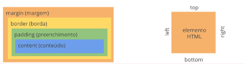
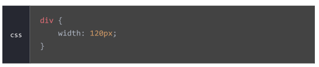
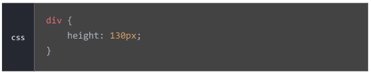
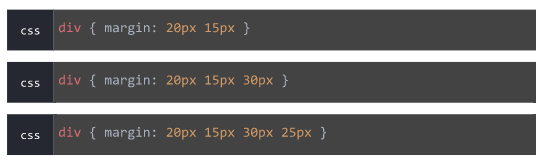
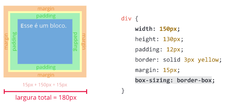

"Em HTML, todos os elementos são representados por caixas. cada caixa é composta por conteúdo, preenchimento, borda e margem."
Utilizando o CSS, é possivel manipular todas as propriedadades para mudar a aparência dos elementos. Por sua vez, essas prpopriedades podem ser inseridas de maneira diferente aos quatro lados de cada caixa (top, right, bottom e left).
Widht: Se um elemento não tiver a propriedade width declarada no css, a largura será igual a 100% de seu valor original, desde que o elemento seja um elemento de bloco. Para esta propriedade geralemnte utilizamos marcação fazendo a medida em % ou em pixels (px) no css. Vide exemplo
Height: Se um elemento não tiver essa propriedade declarada no css, sua altura será igual a altura do conteúdo interno predefinido. Independentemente de ser um elemento de bloco ou de linha. Para atribuir seu valor utiliza-se da mesma unidade de width.
O elemento de padding pode ser definido basicamente como o espaço de preenchimento que agregamos entre um conteudo de sua borda. De modo geral ele corresponde a margem interna do elemento.

Refere-se á borda do elemento em si, fica entre o conteudo e a margem deste. Para atribuir valor a essa proriedade, fazemos isso definindo o estilo da linha, tamanho e cor. O estilo pode ser definido de 4 maneiras:
Refere-se a margem exterior do elemento e serve basicamente para separar uma caixa da outra
Para poder calcular a largura e altura total de algum elemento, temos que somar todas propriedades que vimos anteriormente. Como pode-se imaginar este calculo, pode ser trabalhoso, desse modo usamos a propriedade box-sizing para nos ajudar.
